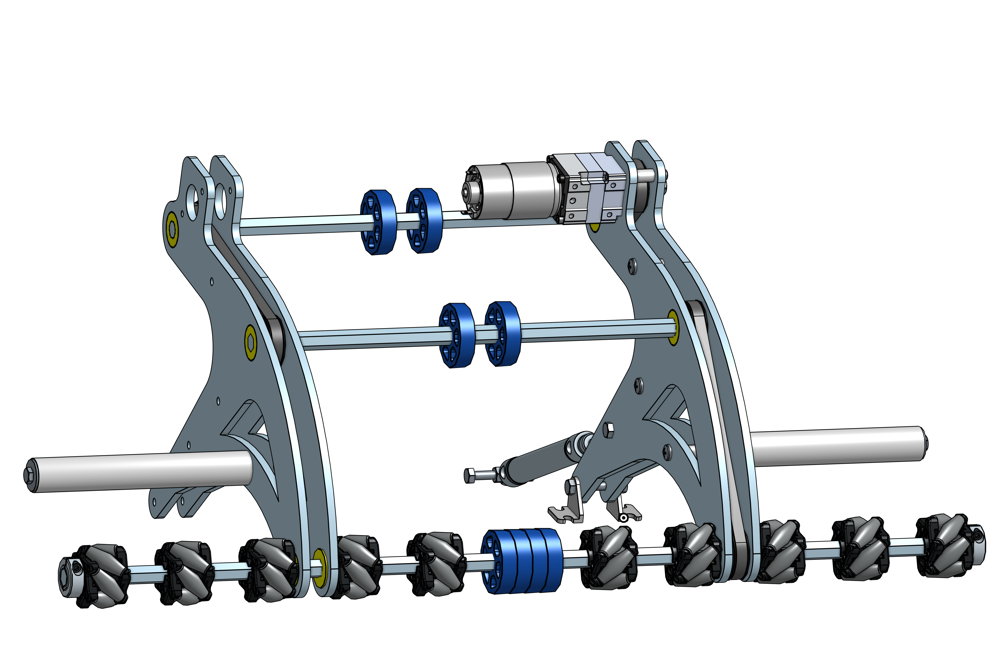
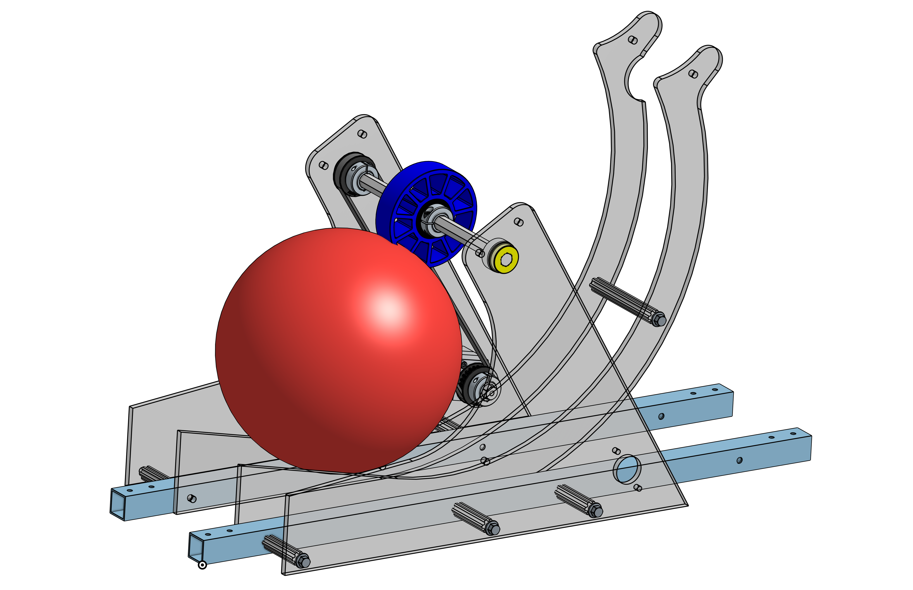
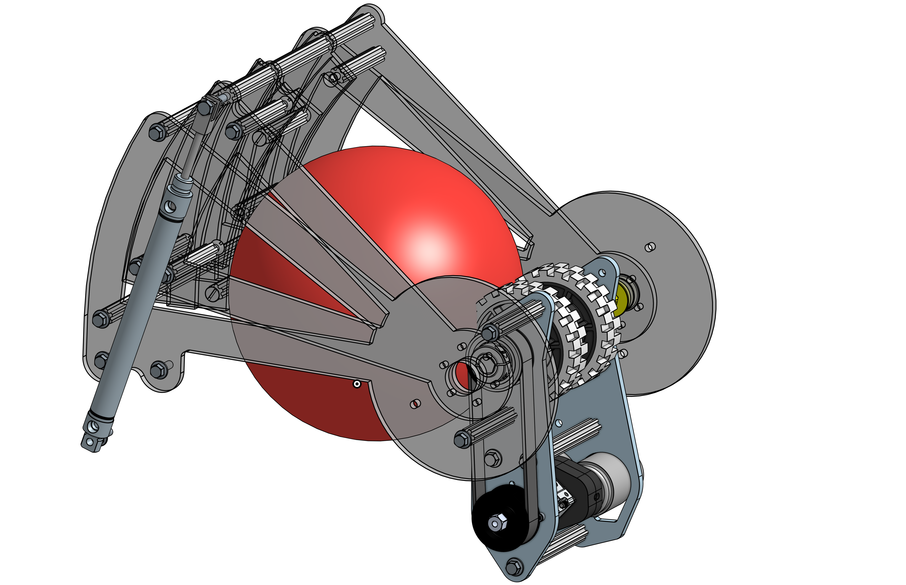

The 2021-22 season was a test of how well the improvements of the previous years had been imprinted on the team, because many of the most ardent members had graduated the previous spring. Would the next generation build on the positive changes and systems, or revert to disjointed disarray?

The 2021-22 AFS Robotics CAD model, done in Onshape.

The robot as built (before the climbing mod).
The reduced stress level and improving results of the previous couple of years were convincing enough that the reformulated team did continue on the trajectory we'd tried to establish (with only a moderate amount of reminding). We were all in on CAD, prototyping, and modular design. We made certain to stick to project timelines so there would be time for testing and practice. The most vivid example of this was building and completing the robot without its central climbing mechanism so the software team would have adequate time for development, debugging, and tuning. We wanted a climbing mechanism, but had finally learned the lesson that diluting our efforts to try to achieve everything would result in mediocrity.
This year featured a much more sophisticated vision processing system to automatically aim the robot and compute distance to the target, and correlate distance with launcher wheel speed. Development of this was started early on, using our previously successful strategy of having a second test bed chassis. The team had learned that planning and project management was worth the time and effort because they freed us from the limitations of working in a linear fashion. No longer would only a few people be working on a small part of the robot while the rest waited for access.
Due to concerns over the high battery drain encountered with our two swerve-based robots, we decided to use more traditional tank drive. Though less maneuverable, we chose gearbox ratios that delivered much higher speed and our analysis of the game rules and playing field supported this tradeoff.
The very high speed drive base gets tuned and tested.
Fast and maneuverable, too.
While the drive chassis was tuned and vision system developed and tested, the other subsystems went through several iterations of refinement. It was possible to do so in a controlled manner because of the totally accurate CAD model, precision of the CNC machine, and improved paradigm of having several test beds. We could be sure the subsystems would integrate because of the CAD model, we could change single variables at a time because of the CNC-based fabrication, and we kept the critical path from creeping up by having multiple efforts proceeding in parallel.
This year's game again involved gathering and launching balls, but they were much larger and only two at a time were allowed to be controlled by the robot. The team decided it was more efficient to gather both balls before setting up to launch them, so the design was driven by a ball path long enough to intake, store, feed and launch two balls. This requirement evolved into a horizontal S-shaped intake/storage stage followed by a vertical S-shaped feed/launch stage.
The intake was based on the previous year's design but was even more efficient, and since it was open-ended it was able to ingest balls even if they entered from the side (as the robot rotated toward them). The grey Mecanum wheels chosen for the primary shaft move the ball laterally against the white backing pipe into the central area between the ribs, and then the blue wheels roll it up into the storage area. This year a single compliant (highly compressible) wheel acted as the gate (to arrest balls coming from the intake) and as the feeder (to send them into the launcher) which required precise locating of the wheel and curvature of the parts of the path. Finally, the launcher had a short-range and long-range mode, selected by retracting or deploying an additional segment of the supporting curve at the back of the unit. This was controlled by the vision processing system that did the aiming and distance computation.
Intake was almost magical in its effectiveness.
Purple wheel controls storage and feed stage.
Launcher with piston to add 30° of arc.
Omitting a climbing system from the initial scope meant that this year's robot was available to the software team earlier than ever before. They were able to tune systems to a degree never done before. There was also time for the drive team to practice, which had been very scarce in previous years. The gains in performance and reduction in stress were astonishing. There was time to develop and tune an autonomous (not driver controlled) routine that scored three and sometimes even four balls within fifteen seconds, which won best routine at the first regional competition.
But of course it would be better to have climbing capabilities, so while the above was deemed the critical path and proceeded without delay, there was a small group who designed, built, and tested a mechanism to lift the robot. There were provisions made in the CAD model for the climb, so that in the event it was completed in time it could be bolted in. It was, and in it went.
Thee award-winning autonomous routine being developed and tested.
Thankfully this year competitions resumed, and all the careful decisions and work paid off. The team earned spots as alliance captains at both regional events and advanced to compete at the district level for the first time since 2015. See matches at https://www.thebluealliance.com/team/4373/2022
Design features:
• Super minimalist design to minimize weight and increase maneuverability
• Battery, compressor, climb motors and drive motors located as low as possible for best stability given high operational speed
• Drive chassis powered by six high performance motors and high ratio gearbox for best balance of torque and speed
• All electronics, pneumatic valves, and non-integrated motor controlers installed on a single panel for easy access and troubleshooting
• Ball intake used one motor driving three shafts to first center and then intake balls along the entire 30" front width of the robot
• Double-S-shaped ball path was as compact as possible while retaining the capacity to handle the max of two of the large game balls and operate quickly
• The climb system proved the modular design approach was a success, as it was developed and tested independently and then easily integrated
PS. What about the climbing mod mentioned in the top right picture? The initial climb system had double-facing hooks at the same height so the robot could approach the bar from either direction. This was handy but not essential. Between the second regional event and the district event, we came up with a design that would allow the robot to climb and then transfer to a higher bar, which earned more points. The modifications were made (as shown in the CAD model) and the upgraded system worked (see District Quals 89).